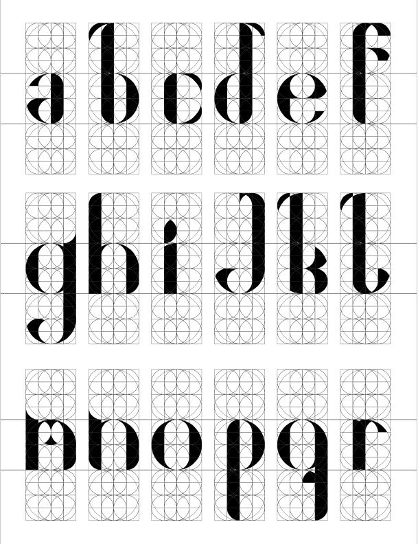
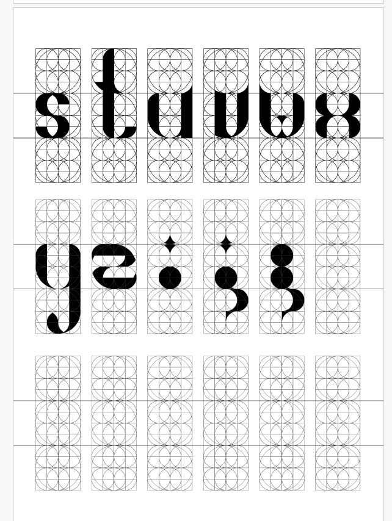
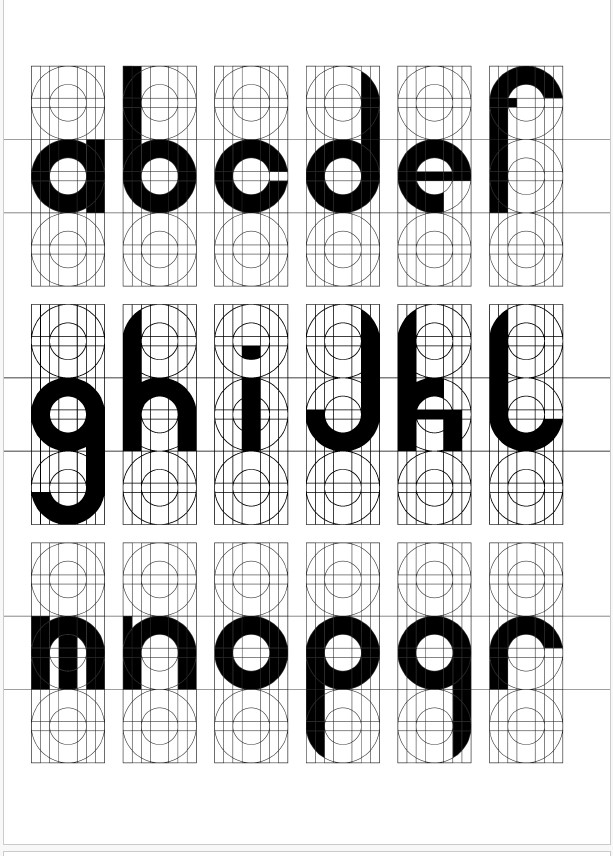
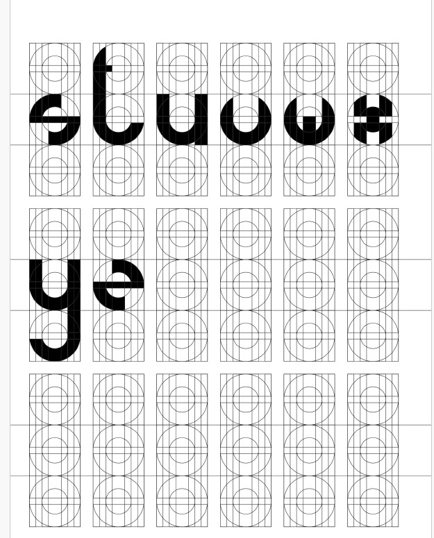

Über die Session
In dieser Session haben wir uns, wie der Titel bereits andeutet, mit Grids beschäftigt. Zunächst haben wir untersucht, wo Grids im Design vorkommen und wie sie zur Strukturierung von Layouts beitragen können. Anschließend sollten wir eigene Grids entwickeln und diese später als Grundlage nutzen, um eine eigene Typografie zu gestalten. Zur Vorbereitung arbeiteten wir zunächst mit Schablonen und Beispiel-Grids, um ein besseres Verständnis für deren Aufbau und Anwendung zu bekommen.
Ich habe mich entschieden, digital zu arbeiten, da ich so nach meinem Empfinden deutlich flexibler in der Gestaltung der Grids bin. In Illustrator entwickelte ich durch das Kombinieren geometrischer Formen eigene, unterschiedliche Grids. Dabei orientierte ich mich an einem der Beispiel-Grids für Typografie, übernahm die Grundlinien zur Trennung von Ober-, Mittel- und Unterteil und passte das restliche Grid im Verlauf des Arbeitsprozesses an meine Vorstellungen an.
Den Rest der Session habe ich damit verbracht, mich mit meinem Drawing-Tool zu beschäftigen, welches in einer anderen Session im Fokus stehen wird.
Reflexion
Ich habe gelernt, wie vielseitig Grids eingesetzt werden können und wie wertvoll es war, dabei flexibel in Illustrator zu arbeiten. So konnte ich sehr schnell verschiedene Möglichkeiten ausprobieren und Variationen durchspielen. Die Arbeit mit Grids hat zudem meine Herangehensweise an das Drawing-Tool stark beeinflusst: Mir wurde klar, dass ich mein Tool unbedingt auf einer Grid-Basis aufbauen möchte, um eine strukturierte und konsistente Gestaltung zu ermöglichen.